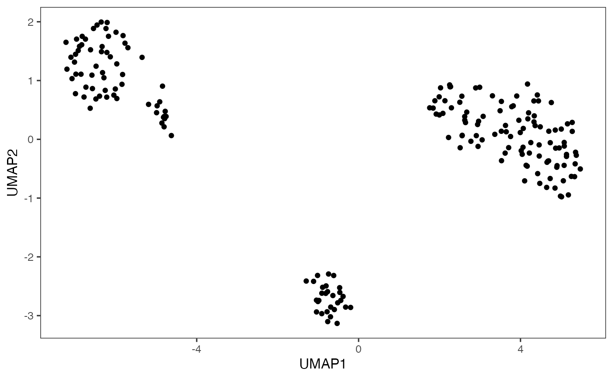

Uniform Manifold Approximation and Projection (UMAP) algorithm
is commonly for 2D visualization of single-cell data. These functions wrap
the scater calculateUMAP function.
Users can use runQuickUMAP to directly create UMAP embedding from raw
count matrix, with necessary preprocessing including normalization, variable
feature selection, scaling, dimension reduction all automated. Therefore,
useReducedDim is disabled for runQuickUMAP.
In a complete analysis, we still recommend having dimension reduction such as
PCA created beforehand and select proper numbers of dimensions for using
runUMAP, so that the result can match with the clustering based on the
same input PCA.
runUMAP(
inSCE,
useReducedDim = "PCA",
useAssay = NULL,
useAltExp = NULL,
sample = NULL,
reducedDimName = "UMAP",
logNorm = TRUE,
useFeatureSubset = NULL,
nTop = 2000,
scale = TRUE,
pca = TRUE,
initialDims = 10,
nNeighbors = 30,
nIterations = 200,
alpha = 1,
minDist = 0.01,
spread = 1,
seed = 12345,
verbose = TRUE,
BPPARAM = SerialParam()
)
runQuickUMAP(inSCE, useAssay = "counts", sample = "sample", ...)
getUMAP(
inSCE,
useReducedDim = "PCA",
useAssay = NULL,
useAltExp = NULL,
sample = NULL,
reducedDimName = "UMAP",
logNorm = TRUE,
useFeatureSubset = NULL,
nTop = 2000,
scale = TRUE,
pca = TRUE,
initialDims = 25,
nNeighbors = 30,
nIterations = 200,
alpha = 1,
minDist = 0.01,
spread = 1,
seed = 12345,
BPPARAM = SerialParam()
)Input SingleCellExperiment object.
The low dimension representation to use for UMAP
computation. If useAltExp is specified, useReducedDim has to
exist in reducedDims(altExp(inSCE, useAltExp)). Default "PCA".
Assay to use for UMAP computation. If useAltExp is
specified, useAssay has to exist in
assays(altExp(inSCE, useAltExp)). Ignored when using
useReducedDim. Default NULL.
The subset to use for UMAP computation, usually for the
selected variable features. Default NULL.
Character vector. Indicates which sample each cell belongs to.
If given a single character, will take the annotation from colData.
Default NULL.
A name to store the results of the UMAP embedding
coordinates obtained from this method. Default "UMAP".
Whether the counts will need to be log-normalized prior to
generating the UMAP via scaterlogNormCounts. Ignored when using
useReducedDim. Default TRUE.
Subset of feature to use for dimension reduction. A
character string indicating a rowData variable that stores the logical
vector of HVG selection, or a vector that can subset the rows of
inSCE. Default NULL.
Automatically detect this number of variable features to use for
dimension reduction. Ignored when using useReducedDim or using
useFeatureSubset. Default 2000.
Whether useAssay matrix will need to be standardized.
Default TRUE.
Logical. Whether to perform dimension reduction with PCA before
UMAP. Ignored when using useReducedDim. Default TRUE.
Number of dimensions from PCA to use as input in UMAP.
Default 10.
The size of local neighborhood used for manifold
approximation. Larger values result in more global views of the manifold,
while smaller values result in more local data being preserved. Default
30. See calculateUMAP for more information.
The number of iterations performed during layout
optimization. Default is 200.
The initial value of "learning rate" of layout optimization.
Default is 1.
The effective minimum distance between embedded points.
Smaller values will result in a more clustered/clumped embedding where nearby
points on the manifold are drawn closer together, while larger values will
result on a more even dispersal of points. Default 0.01. See
calculateUMAP for more information.
The effective scale of embedded points. In combination with
minDist, this determines how clustered/clumped the embedded points
are. Default 1. See calculateUMAP for more
information.
Random seed for reproducibility of UMAP results.
Default NULL will use global seed in use by the R environment.
Logical. Whether to print log messages. Default TRUE.
A BiocParallelParam object specifying whether the PCA should be parallelized.
Parameters passed to runUMAP
A SingleCellExperiment object with UMAP computation
updated in reducedDim(inSCE, reducedDimName).
data(scExample, package = "singleCellTK")
sce <- subsetSCECols(sce, colData = "type != 'EmptyDroplet'")
# Run from raw counts
sce <- runQuickUMAP(sce)
#> Wed Apr 23 11:42:26 2025 ... Computing Scater UMAP for sample 'pbmc_4k'.
plotDimRed(sce, "UMAP")
